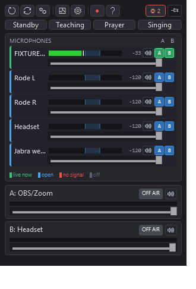

AudioMixer
A small Windows desktop audio mixer for routing 1–10 microphone inputs (configurable, default 3) to 2 outputs (typically your headset/speakers and Zoom via VB-CABLE), with per-channel volume, mute, delay, routing toggles, VU meters, recording, a clap-test delay-detection feature, and a per-output automixer for multi-mic rooms.
Built because Bluetooth mics have ~100-300 ms more latency than wired ones and existing mixers either don't compensate for it or are overkill for a simple setup.
It also handles distributed multi-mic rooms — several mics (e.g. conference speakerphones) spread across a room so everyone is in range. Because every talker is picked up by all the mics at different distances, simply summing them produces comb-filter "echo", a raised noise floor, and reverb. The automixer fixes this by keeping only the mic(s) closest to the active talker open.

Features
- 1–10 input channels — count is configurable from the toolbar (default 3); each with its own device, volume slider, mute, delay (0-1000 ms), and routing toggles
- 2 output buses — each with its own device picker, volume slider, peak meter, and dB readout
- Routing matrix — independent A/B toggles per input
- Auto-mix (per output) — Off / Share / Gate modes with a strength slider and a stable hand-off toggle, applied independently to each output bus. Attenuates every mic except the one(s) closest to whoever is speaking — the fix for multiple distant mics picking up the same voice. Share = smooth gain-sharing (handles overlapping talkers); Gate = one mic open at a time (maximum echo rejection). Two per-input LEDs show what the mixer is doing: a green LED marks the mic currently selected as the talker, an amber LED marks a mic being ducked. A per-input "priority mic" flag keeps a dedicated mic (e.g. a presenter's lapel) always open and lets it duck the room mics while it's speaking. See Auto-mix below.
- VU meters — pre-fader and post-fader for each input, output level meter for each bus; green below -12 dBFS, yellow to -3, red above (clip warning)
- Delay compensation — per-channel adjustable delay buffer (e.g., add 150 ms to the wired mic to align with a Bluetooth one), in each input's ⚙ advanced popup (the gear glows amber when an input has a non-default delay or priority setting)
- Auto-detect delays — clap test that records all active inputs for 4 seconds and aligns them by onset cross-correlation (robust to soft/vocal sounds and speakerphone noise-suppression, not just sharp claps), then suggests per-channel delay values
- Recording — a record button on each output strip captures that bus independently to a WAV file (48 kHz stereo float32) in
Documents\AudioMixer\recordings\; you can record A and B at the same time - Clear input device — each input's device popup has a ✕ Clear device option to unassign it
- Editable labels — rename each input/output strip (e.g., "Rode", "Anker 1", "Headset", "Zoom")
- Auto-save — every setting change persists 500 ms later to
%APPDATA%\AudioMixer\preset.json - Duplicate-device prevention — a device picked for one slot disappears from the others' picker lists
- Compact UI — non-resizable window with click-to-open device popups, no scrollbars, no inline dropdowns; width scales with the input count
Requirements
- Windows 10 or 11
- For Zoom routing: VB-CABLE — free virtual audio cable. Install + reboot. Pick "CABLE Input" as Output B's device, then set Zoom's microphone to "CABLE Output".
Running
From source (developer setup)
git clone <repo path> audio-mixer
cd audio-mixer
winget install Microsoft.DotNet.SDK.8 # one-time, ~250 MB
dotnet run --project AudioMixerPre-built — two flavors
Each GitHub Release ships two single-file exes — pick whichever suits the target:
| Asset | Size | Requires on target | Use when |
|---|---|---|---|
AudioMixer.exe (self-contained) | ~68 MB | nothing | the default — any fresh Windows 10/11 x64 box, no install, no internet |
AudioMixer-slim.exe (framework-dependent) | ~0.8 MB | .NET 8 Desktop Runtime | tiny download / many machines that already have .NET 8 |
If the slim exe runs on a machine without the runtime, Windows prompts the user to download it on first launch (winget install Microsoft.DotNet.DesktopRuntime.8, ~55 MB). The self-contained exe never prompts — it bundles the runtime and the native WPF DLLs (D3DCompiler_47_cor3.dll, PenImc_cor3.dll, PresentationNative_cor3.dll, vcruntime140_cor3.dll, wpfgfx_cor3.dll), self-extracted to a temp folder on first launch. Either way, copy just the one file. (Targets still install VB-CABLE manually if they want Zoom routing.)
Building locally
.\publish.ps1 # self-contained -> bin\publish\AudioMixer.exe (~68 MB)
.\publish.ps1 -Slim # framework-dependent -> bin\publish-slim\AudioMixer.exe (~0.8 MB)Deploying to other computers
Two equivalent ways to get the exe(s):
- Local build — run
.\publish.ps1(add-Slimfor the small one), then copy the resultingAudioMixer.exeto the target (USB stick, network share, etc.). - GitHub Release (CI-built) — push a version tag and let GitHub Actions build both for you:
``powershell git tag v1.0.0 git push origin v1.0.0 ``
The .github/workflows/release.yml workflow builds both exes on a Windows runner and attaches them to a GitHub Release. On any computer, open the repo's Releases page and download AudioMixer.exe (standalone) or AudioMixer-slim.exe — no toolchain needed on the target. The workflow only runs on v* tags, not on ordinary pushes.
Quick start
- Launch AudioMixer
- On Input 1, click the device button (top of the strip) → pick your microphone
- On Output A (right side), click the device button → pick your speakers/headset
- The A toggle on Input 1 is enabled automatically — you should hear yourself
- (Optional) Click A to rename to something memorable like "Headset"
- (Optional) For Zoom: install VB-CABLE, set Output B to "CABLE Input", enable Input 1's B toggle, and set Zoom's microphone to "CABLE Output"
Toolbar (left to right)
- ↻ Refresh devices — re-enumerate Windows audio devices (after plugging in / out)
- ⟳ Resync audio — flush all buffers and restart outputs (use if you notice growing latency)
- ⏱ Detect delays (clap test) — see below
- ● Record all inputs (diagnostic) — toggle to capture every selected input to its own pre-auto-mix WAV, so you can hear exactly what the mic selection is deciding on. Files land in
Documents\AudioMixer\analysis\diag-input{N}-{timestamp}.wav. (For troubleshooting auto-mix selection, not for normal recording.) - Inputs — pick the number of input channels (1–10); the window resizes to fit
(Mix recording is per-output — use the ● button on each output strip, not the toolbar.)
Delay detection
If one of your mics is Bluetooth, it lags the others by 100-300 ms. To auto-compensate:
- Click the stopwatch icon in the toolbar
- A dialog tells you when to make ONE sharp sound (a clap, or a spoken "T!" if your mics suppress claps)
- AudioMixer records all active inputs for 4 seconds, then aligns them by cross-correlating the onset envelopes (the rising edge of the sound), which tolerates timbre/level differences between mics. It reports each input's arrival offset and a confidence score, and proposes per-channel delay values
- Accept "Apply suggested delays" — the latest-arriving input gets 0 ms; others get a delay equal to how much earlier they were
Raw recordings are saved to Documents\AudioMixer\analysis\input{N}-{timestamp}.wav for inspection.
Note: delay compensation only helps when each mic has a fixed source (e.g. one person per mic). For a room where people speak from different positions, the per-mic offset changes with every talker — use Auto-mix instead.
Auto-mix
For rooms with several mics (e.g. conference speakerphones spread across a space), every talker is picked up by all the mics at different distances. Summing them produces comb-filter "echo", a raised noise floor, and reverb. Auto-mix keeps only the mic(s) closest to the active talker open, attenuating the rest. It's set per output (e.g. on for the Zoom/CABLE bus, off for your headset).
Each output's strip has an Auto-mix selector and a Strength slider:
- Off — straight sum of all routed mics (default; unchanged behavior).
- Share — gain-sharing: every mic is ducked in proportion to how far below the selected (closest) mic it is, smoothly. Two people on different mics both come through. Best for discussion/cross-talk. Higher Strength sharpens the ducking (the closest mic dominates more).
- Gate — winner-take-all: only the single closest mic is open; the rest are pushed to a floor. Maximum echo rejection, but it passes one talker at a time. Higher Strength ducks the idle mics harder.
Strength is the live tuning knob — start around the middle and adjust by ear in the room.
Stable hand-off (checkbox, on by default): holds the currently-selected mic with hysteresis (~3 dB) and a short hold (~200 ms) so a brief louder moment on another mic — like a distant speakerphone's auto-gain pumping up during a talker's pause — can't steal the mix. Leave it on for most rooms; turn it off to fall back to picking the instantaneously loudest mic every frame (legacy behavior). Gate always uses the held selection; this toggle controls whether Share does too.
Status LEDs: each input strip has two small LEDs (top-left, by the label). A green LED lights on the mic the automixer has currently selected as the active talker; an amber LED lights on any mic being ducked. At a glance you can see which mic is "winning" (green) and which are being held down (amber).
Priority mic (e.g. a presenter's lapel): if one input is the primary feed — like a presenter's wireless lapel at the front while room mics cover the audience — open that input's advanced popup (the ⚙ gear icon by its label) and tick "Priority mic". A priority mic:
- is always full level and never ducked, and is kept out of the competition (the automixer arbitrates only among the remaining room mics);
- ducks the room mics while it's speaking. This is the important part: the presenter's voice also bleeds into the distant room mics, and without this you'd hear it twice (clean lapel + delayed room mic = echo). While the priority mic is active, the room mics are pushed down (amount follows that output's Strength), so only the clean lapel passes. When the presenter pauses, the room mics open back up for audience questions.
You can mark more than one input as priority — e.g. a pastor and a worship leader, each on their own lapel. They're all kept always-open and each ducks the room mics while speaking. (Note: priority mics don't duck each other, so only flag mics that are isolated on different people — two priority mics picking up the same voice would double.)
The gear popup also holds that input's delay setting and a live Mic clarity bar — a 0–100% readout of how clean/close that mic's signal looks (derived from its crest factor) while it hears speech. It's a diagnostic aid for comparing mics; it does not drive the selection (which is level-based — see the gotchas in CLAUDE.md for why spectral cues don't survive speakerphone DSP).
Notes:
- Two people sharing one mic is the clean case: a single capture point, no multi-mic echo, both voices pass.
- Two people on different mics: Share keeps both; Gate picks one. During the overlap, each open mic also carries the other voice as faint bleed, so a little coloration returns only while people talk over each other.
- VU meters show the pre-auto-mix level, so a ducked mic still shows signal on its meter (watch the amber LED to see ducking).
Architecture
WasapiCapture (per input device)
→ resample to 48k stereo float32
→ mute gate → gain → delay buffer → peak tap
→ per-output auto-mix gain → per-output ring buffer
↓
MixingSampleProvider (per output bus)
↓
Peak tap → recorder tap (optional)
↓
WasapiOut (per output device)- Internal mix format: 48 kHz, stereo, IEEE float32
- WASAPI shared mode for all I/O (so Zoom can also use the same device)
- Per-output buffer: 500 ms cap,
ReadFully=trueto avoidMixingSampleProviderevicting the source on short reads (see CLAUDE.md for the NAudio 2.2.1 gotcha) - Auto-mix: a ~100 Hz decision loop (off the audio threads) reads each channel's level and writes a per-channel, per-output gain that the channel applies at the routing-push step with a click-free ramp
- MVVM with WPF — view-models in
AudioMixer/ViewModels/, engine inAudioMixer/Audio/
File locations
| What | Where |
|---|---|
| Settings (auto-saved) | %APPDATA%\AudioMixer\preset.json |
| Mix recordings | Documents\AudioMixer\recordings\mix-A-… / mix-B-{timestamp}.wav |
| Clap-test recordings | Documents\AudioMixer\analysis\input{N}-{timestamp}.wav |
| Diagnostic per-input recordings | Documents\AudioMixer\analysis\diag-input{N}-{timestamp}.wav |
| Diagnostic log (opt-in) | %TEMP%\AudioMixer.log |
The diagnostic log is off by default. To enable it, set the AUDIOMIXER_LOG environment variable (to any value) before launching — e.g. in PowerShell: $env:AUDIOMIXER_LOG=1; .\AudioMixer.exe.
Known limits
- Two outputs pointing at the same physical device is allowed but quirky — auto-dedupe on preset load keeps the first slot and clears the second. WASAPI shared mode mostly handles two sessions per device, but the implementation has occasional issues.
- Latency floor is the WASAPI shared-mode floor (≈50-100 ms) plus our 200-500 ms jitter buffer + Bluetooth mic device-side delay. Sub-30 ms is not achievable through this stack without switching to ASIO + exclusive mode (which would conflict with Zoom).
- WPF doesn't support trimming reliably, so the self-contained .exe is ~150 MB.
License
Licensed under the GNU General Public License v3.0 — see LICENSE.
Copyright (C) 2026 Wim Kerkhoff
This program is free software: you can redistribute it and/or modify it under the terms of the GPL as published by the Free Software Foundation, either version 3 of the License, or (at your option) any later version. It is distributed in the hope that it will be useful, but WITHOUT ANY WARRANTY; without even the implied warranty of MERCHANTABILITY or FITNESS FOR A PARTICULAR PURPOSE.